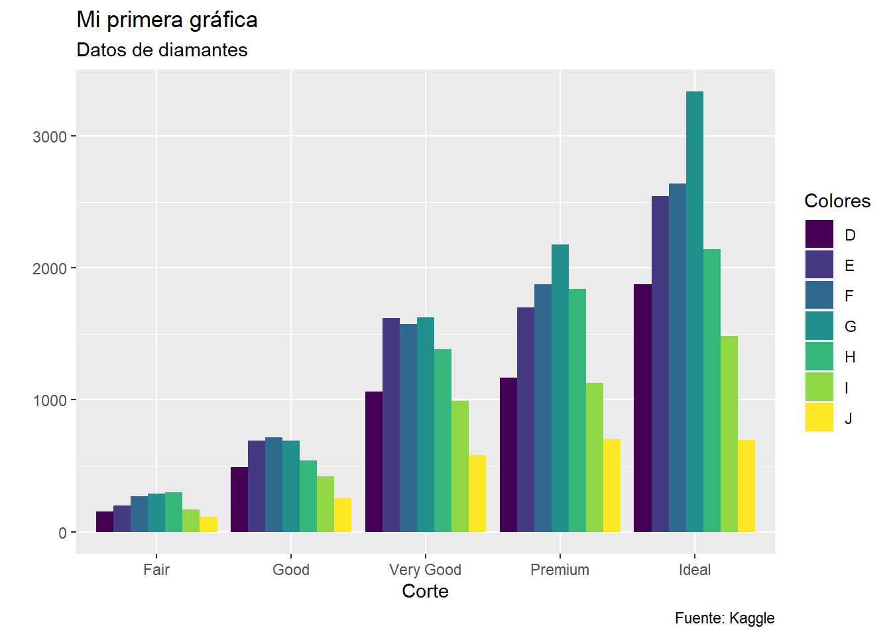

library(dplyr)
Attaching package: 'dplyr'The following objects are masked from 'package:stats':
filter, lagThe following objects are masked from 'package:base':
intersect, setdiff, setequal, unionlibrary(ggplot2)R es un lenguaje de programación pensado para profesionales de las matemáticas y de la estadística. En este sentido, es un software con mucha historia (desde los 70’s aproximadamente). Por esta razón se ha tenido que actualizar y mejorar. Esto se ha debido, principalmente, a la gran comunidad de usuarios y a que es un software gratuito y de código abierto. Esto quiere decir que todas lo pueden modificar y adaptar de acuerdo a sus necesidades.
Por esta razón, se han creado herramientas para el análisis de datos: Tidyverse
R tiene una sintaxis base (a partir de ahora, R base). Sin embargo, como cualquier otro lenguaje, las palabras, cosas y significados cambian a lo largo del tiempo. Tidyverse nos permite realizar distintas operaciones sobre bases de datos (además de que me parece más amigable que R base).
A estar herramientas adicionales se les llama paquetes (packages) y deben ser instaladas. Una vez instaladas, solo deben “activarse” cada vez que serán utilizadas (library).
En este caso, tidyverse es un conjunto de paquetes: - ggplot (visualización/gráficas) - dplyr (manipulación de bases de datos) - tidyr (arreglo/acomodar bases de datos) - readr (importar “leer” archivos) - tibble (creación de bases de datos, data frames) - stringr (funciones para textos, strings) - forcats (funciones para factores)
Bueno, esto ya fue mucho choro. Vamos a jugar un rato. Para ejecutar el código abajo debes tener instalado R, R studio, así como tidyverse install.packages(“tidyverse”) en tu script.
En este caso, vamos a utilizar las bases de datos que vienen por default en ggplot. Por lo que no tendrás que descargar nada (por ahora). Una forma de presentar nuestros resultados es a través de tablas y gráficas. Empezaremos con cosas sencillas, hasta hacerlas complejas y bonitas.
library(dplyr)
Attaching package: 'dplyr'The following objects are masked from 'package:stats':
filter, lagThe following objects are masked from 'package:base':
intersect, setdiff, setequal, unionlibrary(ggplot2)Para mi, me funciona colocar las libraries al principio del script. Esto me ayuda a tener claridad de que paquetes estoy utilizando.
datos <- diamonds
dim(datos)[1] 53940 10“datos” es el nombre que le puse a la base de datos (si lo nombramos existe :D). “diamonds” es la base de datos dentro del paquete ggplot2. Contiene información de precios, calidad y quilates de 53,940 diamantes, en 10 columnas. ¿Qué cómo sé eso? por la función dim: número de renglones y número de columnas. Para información adicional, pueden revisar la página de Kaggle sobre este dataset
summary(datos) carat cut color clarity depth
Min. :0.2000 Fair : 1610 D: 6775 SI1 :13065 Min. :43.00
1st Qu.:0.4000 Good : 4906 E: 9797 VS2 :12258 1st Qu.:61.00
Median :0.7000 Very Good:12082 F: 9542 SI2 : 9194 Median :61.80
Mean :0.7979 Premium :13791 G:11292 VS1 : 8171 Mean :61.75
3rd Qu.:1.0400 Ideal :21551 H: 8304 VVS2 : 5066 3rd Qu.:62.50
Max. :5.0100 I: 5422 VVS1 : 3655 Max. :79.00
J: 2808 (Other): 2531
table price x y
Min. :43.00 Min. : 326 Min. : 0.000 Min. : 0.000
1st Qu.:56.00 1st Qu.: 950 1st Qu.: 4.710 1st Qu.: 4.720
Median :57.00 Median : 2401 Median : 5.700 Median : 5.710
Mean :57.46 Mean : 3933 Mean : 5.731 Mean : 5.735
3rd Qu.:59.00 3rd Qu.: 5324 3rd Qu.: 6.540 3rd Qu.: 6.540
Max. :95.00 Max. :18823 Max. :10.740 Max. :58.900
z
Min. : 0.000
1st Qu.: 2.910
Median : 3.530
Mean : 3.539
3rd Qu.: 4.040
Max. :31.800
datos <- datos %>%
select(-c(x, y, z)) %>%
filter(price >= 1000)En este chunk, o pedazo de código, la función summary nos da un resumen de como están distribuidas las variables. Mientras que %>% es un operador llamado pipe que funciona con dplyr y nos permite realizar operaciones secuenciales; esto significa que va a ser como una cascada: del conjunto de datos ejecuta la operación select y luego la operación filter.
Así pues, select nos permite mantener o eliminar columnas de una base de datos. La parte c() es para indicar una selección de columnas, en este caso las columnas llamadas “x”, “y” y “z”. Mientras que el signo negativo - que le antecede indica que esa selección se va a eliminar. Por último, la función filter es un filtro para quedarnos solo con los datos que cumplan la condición: que el preció sea mayor o igual a mil dólares.
ggplot(datos, aes(x = cut)) +
geom_bar()
Una gráfica de barras es, originalmente, una gráfica de una sola variable.
Igual que en dplyr, ggplot ejecuta operaciones secuenciales: primero necesita la base de datos a graficar (datos), luego en aes (aesthetics) van las variables principales a graficar. Es decir, el “eje x” y “eje y”. Este tipo de gráficas sencillas son muy útiles para explorar los datos. Y por lo tanto se pueden complejizar para obtener mejores lecturas, intuiciones y llegar a conocimiento. Pero vamos paso a paso.
ggplot(datos, aes(x = cut, fill = color)) +
geom_bar()
En este chunk¨la el parametro fill* nos permite incluir variables categóricas dentro de las barras. Esto quiere decir, aquellas categorías que son mutuamente excluyentes, en este caso si un diamante es color “D”, no puede ser al mismo tiempo de color “J”.
ggplot(datos, aes(x = cut, fill = color)) +
geom_bar(position = "dodge")
Como ya separamos cada barra en categorías, separarlas a lo largo del eje puede ser una buena opción.
ggplot(datos, aes(x = cut, fill = color)) +
geom_bar(position = "dodge") +
labs(
title = "Mi primera gráfica",
subtitle = "Datos de diamantes",
y = "", x = "Corte",
caption = "Fuente: Kaggle",
fill = "Colores"
)
La función labs es muy útil para modificar las gráficas y es bastante intuitiva. En este caso, todo lo que está en comillas son textos (strings). Y en el caso del eje Y se elimina la etiqueta del conteo.
ggplot(datos, aes(x = cut, fill = color)) +
geom_bar(position = "dodge") +
labs(
title = "Mi primera gráfica",
subtitle = "Datos de diamantes",
y = "", x = "corte",
caption = "Fuente: Kaggle",
fill = "Colores"
) +
coord_flip() +
theme_classic()
La función coord flip nos permite girar a la izquierda nuestra gráfica, mientras que la función theme_classic() cambia como se ve la gráfica final.
Este post es una versión revisada de la primera iteración de este blog y tiene como intención servir de tutorial para el análisis de datos.